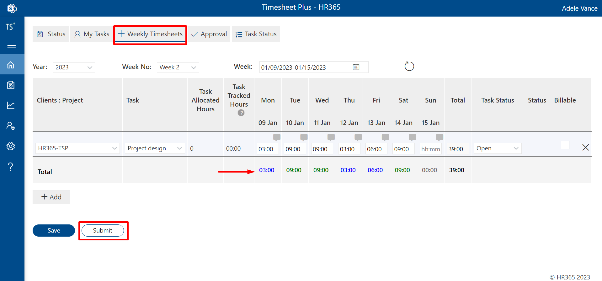
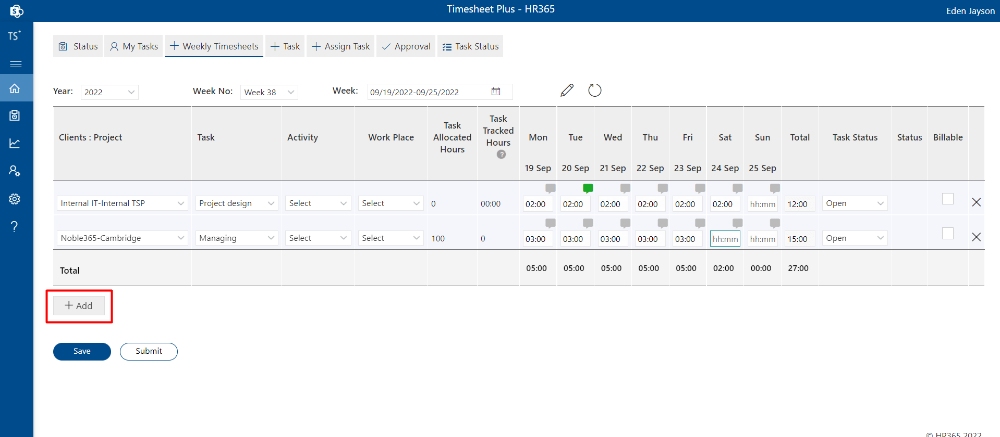
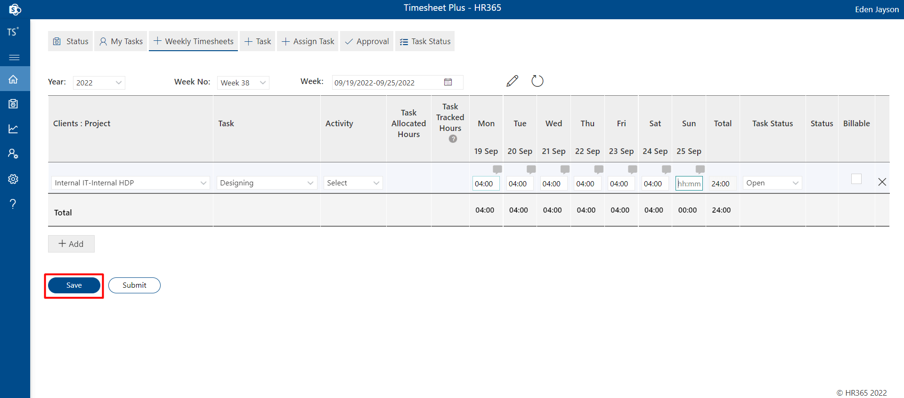
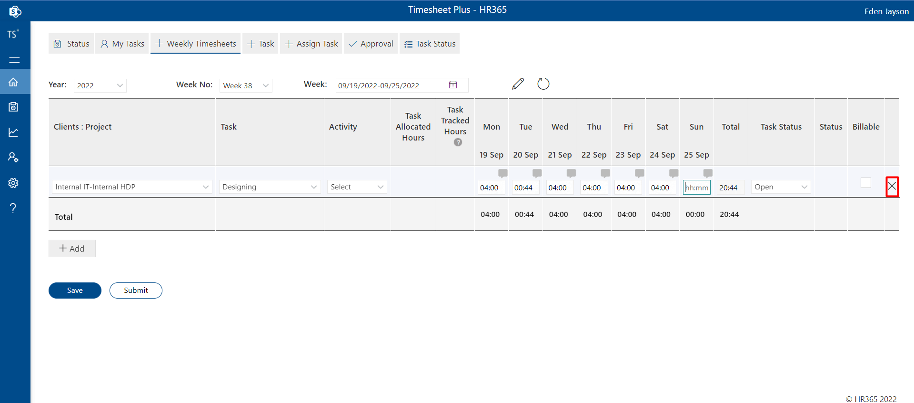
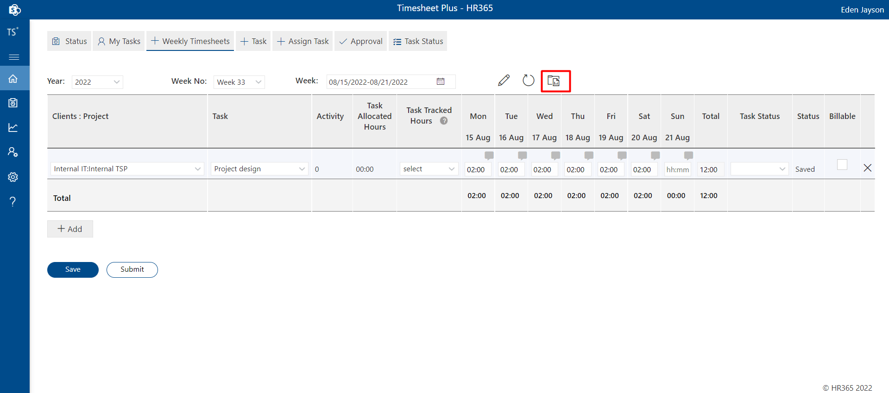
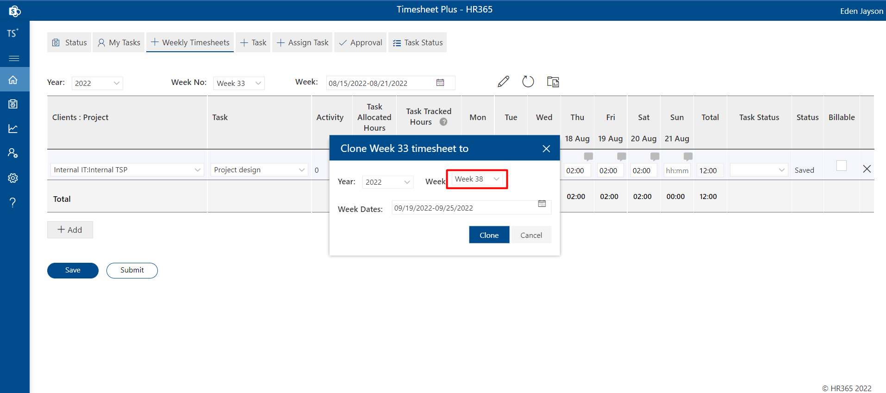
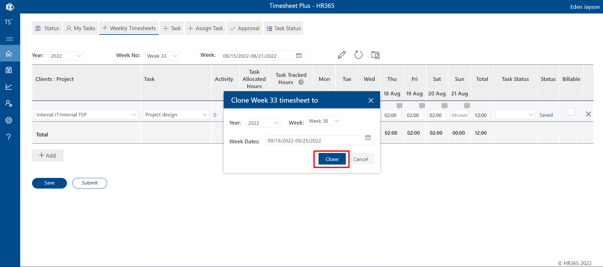
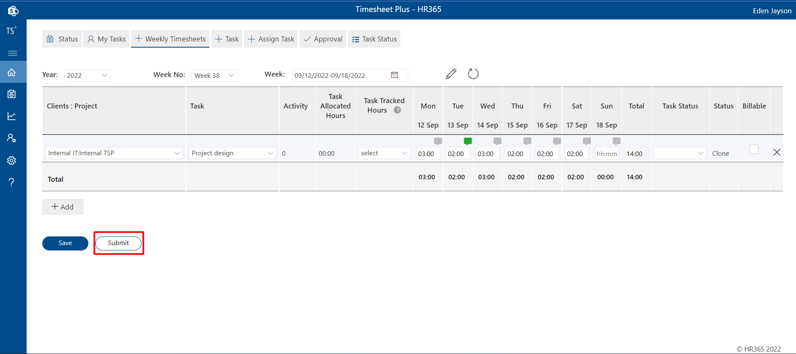

Timesheets
-
Table of content
Weekly Timesheets
Weekly Timesheets
Setup
Admin can set up or customize weekly timesheets as per their requirements before using them. Below are the important points to note:
By default, all features are disabled. You can enable and configure them based on your requirements.
Note: Click on the 'Save Settings' button after making changes in each tab of the settings page.
Time Tracking Days: Block weekend days by navigating to Settings in the side panel under the Advanced Settings tab. Uncheck the days you don't want to track and click on the 'Save' button, followed by 'Save Settings.'
Restrict Daily and Weekly Hours: Set a maximum number of hours for both daily and weekly time entries. If enabled, users cannot log hours beyond these limits. Go to Settings, enable the 'Restrict Daily and Weekly Hours' toggle, enter the desired limits, and save the settings.
Activities: If enabled, the activity column will appear in the weekly timesheet, allowing users to select activities. To enable, go to Settings in the side panel under the General tab, enable the 'Display Activities' toggle, and save the settings.
Work Place: If enabled, users can select a workplace in their weekly timesheet. This is essential for billing some projects based on onsite rates. To enable, go to Settings under the Features tab, enable the 'Workplace' toggle, add work places as needed, click 'Submit' in the popup, and save the settings. Note: Do not edit or remove the "on-site" word in the workplace popup to ensure onsite billing functions correctly.
Mandatory Task Selection While Tracking Time: By default, this feature is enabled. If you want to allow users to submit timesheets without selecting tasks, disable this feature. Go to Settings under the Features tab, disable the 'Mandatory Task Selection While Tracking Time' toggle, and save the settings.
Submitting Weekly Timesheets
Timesheets can be submitted for the past week or on the last working day of the current week via the 'Weekly Timesheets' tab or from the side panel under 'Timesheets.' To submit, select the week number, choose the project, select the task from the dropdown, enter the time, add comments, and click the 'Submit' button. Time-filling indicators will show in green if the time matches the daily limit or in blue if it doesn't.
Submitting Weekly Timesheets for Multiple Projects or Tasks
Users can submit timesheets for multiple projects or tasks using the 'Add' button, as shown below:
Saving Timesheets
Timesheets can be saved for later submission. To save, click the 'Save' button, and the timesheet will appear in the 'Drafts' section. You can refresh by clicking the refresh icon next to the week calendar to display the draft timesheets.
Canceling Weekly Timesheets
Users can cancel their submitted timesheets only if they have not been approved. To cancel, click the cross icon located on the right side of the weekly timesheets table:
Cloning Weekly Timesheets
Users are allowed to clone weekly timesheets and edit the cloned timesheet. To clone a timesheet, follow the steps below:
-
Click on the Clone Weekly Timesheet icon. A dialog box will appear. Select the week from the dropdown menu.
 -
Click on the Clone button in the dialog box.
 -
The timesheet will be cloned for the selected week. Edit the cloned timesheet's time and click the 'Submit' button after making the changes.

-
Approval
Project Managers have the ability to approve timesheets from the Approval tab. To do this, they need to select the desired week and employee, then click on an item in the table. This will display the timesheet table with options to approve or reject the timesheet, allowing managers to take appropriate action.
Program manager can approve project manger’s time sheets.
Pending Weekly Timesheets
By default, this feature is disabled. However, Admins can enable it by navigating to the settings page, selecting the "General" tab, and enabling the "Show pending weekly timesheet from" option. After selecting the appropriate value from the dropdown list, click on the save settings button. Once enabled, the feature will be visible within the panel under the timesheets section.
Users can apply filters based on their requirements and click the "Apply Filters" button. This will filter out all pending timesheets, as shown in the image below. Additionally, clicking the "Remind" button will send a reminder email to the respective employee.